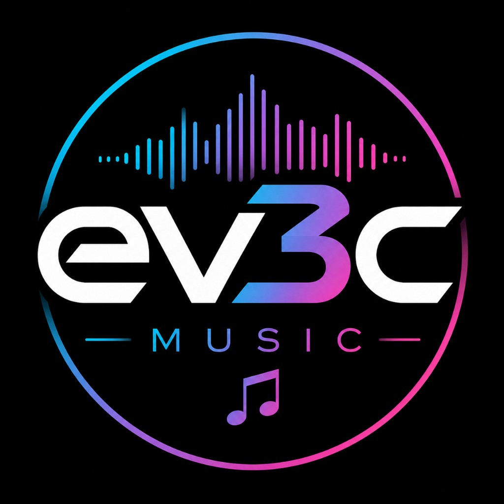

YouTube no reproduce vídeos al abrir el archivo directamente. Usa el servidor local.
Buscando novedades para ti…

Conecta la playlist para empezar a reproducir
ev3c music ENG
Selecciona un idioma para reproducir